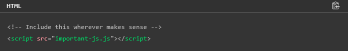

Optimizacija JavaScript koda: Poboljsanje brzine i efikasnosti koda
Vrlo je važno uzeti u obzir kako koristimo JavaScript na svojim web stranicama i razmisliti o tome kako ublažiti probleme s performansama koje on može uzrokovati. Dok slike i video zauzimaju preko 70% bajtova preuzetih za prosječnu web stranicu, bajt po bajtu, JavaScript ima veći potencijal za negativan utjecaj na performanse — može značajno utjecati na vrijeme preuzimanja, performanse renderiranja i korištenje CPU-a i baterije. Ovaj članak predstavlja savjete i tehnike za optimizaciju JavaScripta za poboljšanje performansi vaše web stranice.
Optimizovati ili ne?
Prvo pitanje na koje bismo trebali odgovoriti prije nego počnemo optimizirati svoj kod je "šta trebam optimizirati?". Neki od savjeta i tehnika o kojima se govori u nastavku su dobre prakse koje će koristiti gotovo svakom web projektu, dok su neke potrebne samo u određenim situacijama. Pokušaj primjene svih ovih tehnika posvuda je vjerovatno nepotreban i može biti gubljenje vašeg vremena. Trebali biste shvatiti koje su optimizacije performansi zapravo potrebne u svakom projektu.
Da bismo to učinili, moramo izmjeriti performanse naše stranice. Kao što pokazuje prethodna veza, postoji nekoliko različitih načina mjerenja performansi, od kojih neki uključuju sofisticirane API-ja za performanse. Međutim, najbolji način da započnemo jeste da naučimo kako da koristimo alate kao što su ugrađena mreža pretraživača i alati za performanse, da vidimo koji djelovi učitavanja stranice traju dugo i treba ih optimizovati.
Optimizacija JavaScript preuzimanja
Najučinkovitiji JavaScript koji najmanje blokira JavaScript koji možete koristiti je JavaScript koji uopće ne koristite. Trebali biste koristiti što je manje moguće JavaScript. Nekoliko savjeta koje treba imati na umu:
- Ne treba vam uvijek framework: možda ste upoznati s korištenjem JavaScript framework-a. Ako imate iskustvo i samopouzdanje u korištenju ovog okvira, i kao i sve alate koje pruža, onda bi to mogao biti vaš alat za izradu većine projekata. Međutim, okviri su teški za JavaScript. Ako stvarate prilično statičko iskustvo sa nekoliko JavaScript zahtjeva, vjerovatno vam taj okvir nije potreban. Možda ćete moći implementirati ono što vam je potrebno koristeći nekoliko redova standardnog JavaScripta.
- Razmislite o jednostavnijem rješenju: možda imate blistavo, zanimljivo rješenje za implementaciju, ali razmislite da li će ga vaši korisnici cijeniti. Da li bi više voleli nešto jednostavnije?
- Uklonite neiskorišteni kod: Ovo može zvučati očigledno, ali je iznenađujuće koliko programera zaboravlja očistiti neiskorištenu funkcionalnost koja je dodana tokom procesa razvoja. Morate biti pažljivi i promišljeni o tome šta se dodaje i uklanja. Sva skripta se analizira, bez obzira da li se koristi ili ne; stoga bi brza pobjeda za ubrzanje preuzimanja bila da se riješite bilo koje funkcionalnosti koja se ne koristi. Uzmite u obzir i to da ćete često koristiti samo malu količinu funkcionalnosti dostupne u okviru. Da li je moguće kreirati prilagođenu konstrukciju okvira koja sadrži samo dio koji vam je potreban?
- Consider built-in browser features: It might be that you can use a feature the browser already has, rather than creating your own via JavaScript. For example:
- Koristite ugrađenu provjeru valjanosti obrasca na strani klijenta.
- Koristite vlastiti video player pretraživača.
- Koristite CSS animacije umjesto JavaScript biblioteke animacija.
Učitavanje kritičnih assets-a što je prije moguće
Ako je skripta zaista važna i zabrinuti ste da utiče na performanse jer se ne učitava dovoljno brzo, možete je učitati unutar head dokumenta:
Ovo radi OK, ali blokira renderiranje. Bolja strategija je korištenje rel="preload" za kreiranje preloadera za kritični JavaScript:
Predučitavanje link dohvaća JavaScript što je prije moguće, bez blokiranja renderiranja. Zatim ga možete koristiti gdje god želite na svojoj stranici:

Rastavljanje dugih zadataka
Kada pretraživač pokrene vaš JavaScript, on će organizovati skriptu u zadatke koji se pokreću uzastopno, kao što je pravljenje zahteva za dohvaćanje, pokretanje interakcija korisnika i unosa kroz rukovaoce događajima, pokretanje animacije vođene JavaScript-om i tako dalje.
Većina ovoga se dešava na glavnoj niti, sa izuzecima uključujući JavaScript koji radi u Web Workers-u. Glavna nit može pokrenuti samo jedan zadatak u isto vrijeme.
Kada jednom zadatku treba duže od 50 ms da se pokrene, klasifikuje se kao dug zadatak. Ako korisnik pokuša da stupi u interakciju sa stranicom ili je zatraženo važno ažuriranje korisničkog sučelja dok traje dug zadatak, to će uticati na njegovo iskustvo. Očekivani odgovor ili vizuelno ažuriranje će biti odgođeno, što će rezultirati da korisničko sučelje izgleda sporo ili nereagira.
Da biste ublažili ovaj problem, morate raščlaniti duge zadatke na manje zadatke. Ovo pretraživaču daje više šansi da izvrši vitalno rukovanje korisničkom interakcijom ili ažuriranja UI renderiranja – pretraživač ih potencijalno može obaviti između svakog manjeg zadatka, a ne samo prije ili nakon dugog zadatka. U svom JavaScript-u, to možete učiniti tako što ćete svoj kod razbiti u zasebne funkcije. Ovo takođe ima smisla iz nekoliko drugih razloga, kao što je lakše održavanje, otklanjanje grešaka i pisanje testova.
Da bismo ovo riješili, povremeno izvodimo funkciju "yield" kako bismo naveli kod da se preda glavnoj niti. To znači da je naš kod podijeljen na više zadataka, između čijeg izvršavanja pregledniku se daje mogućnost da se bavi zadacima visokog prioriteta kao što je ažuriranje korisničkog sučelja. Uobičajeni obrazac za ovu funkciju koristi setTimeout() za odlaganje izvršenja u poseban zadatak:
Optimiziranje performansi event-ova
Event-ovi mogu biti skupi za preglednik za praćenje i obradu, posebno kada kontinuirano pokrećete događaj. Na primjer, možda pratite položaj miša koristeći događaj mousemove da provjerite je li još uvijek unutar određenog područja stranice:
Možda pokrećete igru u canvas-u na svojoj stranici. Dok je miš unutar platna, htjet ćete stalno provjeravati kretanje miša i poziciju kursora i ažurirati stanje igre — uključujući rezultat, vrijeme, poziciju svih sprite-ova, informacije o detekciji sudara, itd. na kraju, više nećete morati da radite sve to, i u stvari, bilo bi gubljenje procesorske snage da stalno slušate taj događaj.
Savjeti za pisanje efikasnijeg koda
Postoji nekoliko opštih najboljih praksi koje će učiniti da vaš kod radi efikasnije:
- Smanjite manipulaciju DOM-om: Pristup i ažuriranje DOM-a je računski skupo, tako da biste trebali minimizirati količinu koju vaš JavaScript radi, posebno kada izvodite konstantnu DOM animaciju.
- Grupne DOM promjene: Za bitne DOM promjene, trebali biste ih grupirati u grupe koje se rade zajedno, umjesto da samo ispaljujete svaku pojedinačnu promjenu kako se dogodi. Ovo može smanjiti količinu posla koji pretraživač radi u stvarnim terminima, ali i poboljšati percipirane performanse. Može učiniti da korisničko sučelje izgleda glatkije kako biste uklonili nekoliko ažuriranja u jednom potezu, umjesto da stalno pravite mala ažuriranja. Ovdje je koristan savjet — kada imate veliki komad HTML-a za dodavanje na stranicu, prvo napravite cijeli fragment (obično unutar DocumentFragmenta), a zatim ga sve dodajte u DOM odjednom, umjesto da dodajete svaku stavku zasebno.
- Pojednostavite svoj HTML: Što je jednostavnije vaše DOM stablo, brže mu se može pristupiti i njime se može manipulisati pomoću JavaScript-a. Pažljivo razmislite šta je potrebno vašem korisničkom sučelju i uklonite nepotrebne nedostatke.
- Smanjite količinu koda u petlji: petlje su skupe, pa smanjite količinu upotrebe petlje u vašem kodu gdje god je to moguće. U slučajevima kada su petlje neizbježne:
- Izbjegavajte pokretanje cijele petlje kada je to nepotrebno, koristeći naredbe break ili continue prema potrebi. Na primjer, ako tražite nizove za određeno ime, trebali biste se izvući iz petlje kada se pronađe ime; nema potrebe za pokretanjem daljnjih iteracija petlje:
- Radite posao koji je potreban samo jednom izvan petlje. Ovo može zvučati pomalo očigledno, ali to je lako previdjeti. Uzmite sljedeći isječak, koji dohvaća JSON objekat koji sadrži podatke koje treba obraditi na neki način. U ovom slučaju operacija dohvaćanja() se radi na svakoj iteraciji petlje, što je gubitak računarske snage. Dohvaćanje, koje ne zavisi od i, može se pomeriti izvan petlje, tako da se radi samo jednom:
- Pokrenite računanje izvan glavne niti: Ranije smo govorili o tome kako JavaScript općenito pokreće zadatke na glavnoj niti i koliko dugo operacije mogu blokirati glavnu nit, što potencijalno dovodi do loših performansi korisničkog sučelja. Takođe smo pokazali kako duge zadatke podijeliti na manje zadatke, ublažavajući ovaj problem. Drugi način rješavanja ovakvih problema je potpuno premještanje zadataka s glavne niti. Postoji nekoliko načina da to postignete:
- Koristite asinhroni kod: Asinhroni JavaScript je u osnovi JavaScript koji ne blokira glavnu nit. Asinhroni API-ji imaju tendenciju da rukuju operacijama kao što su dohvaćanje resursa iz mreže, pristup datoteci na lokalnom sistemu datoteka ili otvaranje toka na web kameri korisnika. Budući da bi te operacije mogle potrajati dugo, bilo bi loše samo blokirati glavnu nit dok čekamo da se završe. Umjesto toga, pretraživač izvršava te funkcije, održava glavnu nit izvršavajući sljedeći kod, a te funkcije će vratiti rezultate kada budu dostupne u nekom trenutku u budućnosti. Moderni asinhroni API-ji su zasnovani na Promise-u, što je funkcija JavaScript jezika dizajnirana za rukovanje asinhronim operacijama. Moguće je napisati vlastite funkcije zasnovane na promise-u ako imate funkcionalnost koja bi imala koristi od asinhronog pokretanja.
- Pokrenite računanje u web radnicima: Web radnici su mehanizam koji vam omogućava da otvorite zasebnu nit za pokretanje dijela JavaScripta, tako da ne blokira glavnu nit. Radnici imaju neka velika ograničenja, najveće je to što ne možete raditi nikakve DOM skripte unutar radnika. Možete raditi većinu drugih stvari, a radnici mogu slati i primati poruke na i iz glavne niti. Glavni slučaj upotrebe za radnike je ako imate puno računanja za obaviti, a ne želite da blokira glavnu nit. Uradite to izračunavanje u workeru, pričekajte rezultat i pošaljite ga nazad u glavnu nit kada bude spreman.
- Koristi WebGPU: WebGPU je API pretraživača koji omogućava web programerima da koriste GPU (Graphic Processing Unit) osnovnog sistema za izvođenje proračuna visokih performansi i crtanje složenih slika koje se mogu prikazati u pretraživaču. Prilično je složen, ali može pružiti još bolje performanse od web radnika.